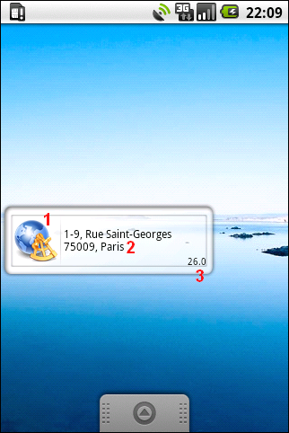
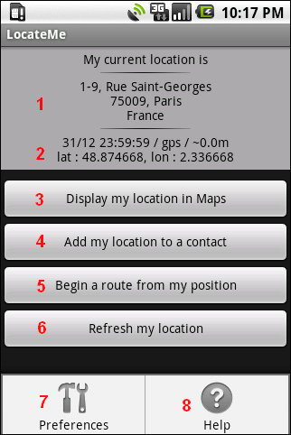

LocateMe
Team Migo - 2009
LocateMe is an Android widget which display your location in real time.
In addition, LocateMe allows following actions:
- add your location to a contact ;
- view your position on a map ;
- launch a route from your position ;
- ...
Important : The accuracy of the address displayed is not certified, it depends of the locator service used (GPS, Network, ...).
This document helps you to use the widget LocateMe

1. This is the LocateMe icon, touch it provides access to all features ;
2. This part indicates the approximate address of your current location. If no addresses found, your GPS coordinates are displayed ;
3. This number represents the range of accuracy of your position. For example, on the screenshot, you are in a radius of 26 meters around the street Saint-Georges. This value can be in meters or in miles(look your preferences settings).

1. This part indicates the approximate address of your current position ;
2. The informations displayed are :
- the last update of the position (the format of the date is editable in your preferences) ;
- the locator service used, ie by GPS or Network ;
- radius of the accuracy of your position (the value can be expressed in meters or miles, see your preferences) ;
- your location with latitude (lat) and longitude (lon) ;
3. This button displays your position on a map (available if your location is defined) ;
4. This button adds your current address to a contact (available if an address has been defined from your location) ;
5. This button launches a route from your current address (available if an address has been defined from your location) ;
6. This button forces the update of the location without taking into your preferences ;
7. This link is available by pressing button "menu", allows to change LocateMe your preferences (refresh period, display preferences, ...) ;
8. This link is available by pressing button "menu", displays this help.